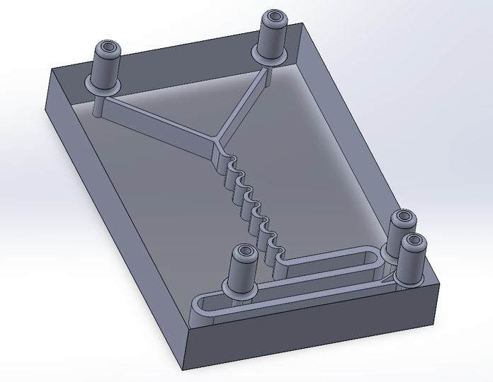
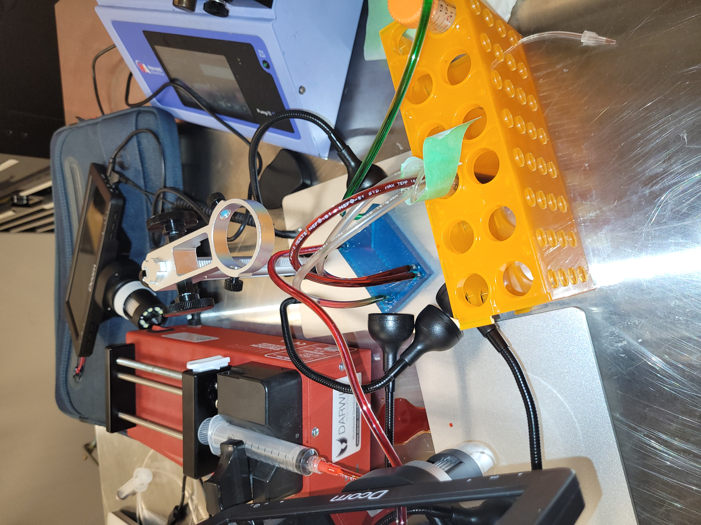

Overview
The CTC j-Chip is a microfluidic device that isolates circulating tumor cells (CTCs) from a blood sample, developed as a team project for MECH 452. CTCs break off from primary tumors and enter the bloodstream, where they are early indicators of cancer and drivers of metastasis. They are also vanishingly rare, on the order of 1 to 10 cells per millilitre among billions of blood cells, which is what makes isolating them hard. The chip separates them in stages, first by size and then by magnetic labelling, working toward a low-cost, handheld point-of-care screening tool.
How It Works
The device isolates CTCs in three stages on a single chip, feeding blood and a buffer solution in at the top and collecting an enriched sample at the bottom. The separation exploits two differences between CTCs and the surrounding blood: CTCs are relatively large (typically 12 to 18 µm, rarely below 5 µm, against 6 to 8 µm for red blood cells), and they are CD45-negative while white blood cells are CD45-positive.

- Deterministic Lateral Displacement (DLD). Blood and buffer pass through an array of micro-posts. Cells above a 4 µm critical diameter (CTCs and white blood cells) are continuously deflected at a 1.7° angle in "bump mode" toward one side, while smaller red blood cells and platelets zig-zag straight through to a waste outlet. This is a purely geometric, size-based sort.
- Inertial Focusing. A serpentine channel with alternating cross-sections increases particle interaction, so the CD45 antibodies carried in the buffer bind magnetic beads onto the white blood cells. The CD45-negative CTCs stay unlabelled.
- Magnetically Assisted Cell Separation (MACS). Magnets hold the bead-labelled white blood cells against the channel wall while the unlabelled CTCs flow past and collect at the outlet, leaving an enriched CTC sample.
Two choices set the design apart. Gravity-driven flow removes the need for external pumps, so the device can run by hand. And a planned on-chip impedance sensor would count the isolated CTCs electrically, replacing the bulky lab cytometry equipment these devices usually depend on.
Design
The chip was modelled in SolidWorks, with each region's geometry grounded in microfluidic theory and published CTC-isolation studies rather than guesswork. The parametric decisions that drove the layout were:
- Set the DLD critical diameter to 4 µm, so CTCs and white blood cells bump aside while red blood cells and platelets follow the flow to waste.
- Sized the DLD channel length from the deflection angle, Length = Width / tan(1.7°), so bumped cells fully traverse the channel before the outlet.
- Took the micro-post size and spacing from the Karabacak reference geometry, the same study the 4 µm critical diameter is drawn from.
- Shaped the inertial-focusing region as a serpentine channel that alternates cross-section at a 2:1 ratio to drive the particle interaction needed for bead attachment.

Manufacturing
The prototype was 3D printed in resin on a DLP printer. DLP resolution could not reproduce the fine micro-post array, so rather than abandon a physical test I printed a partial model: a Y-shaped inlet stands in for the micro-post array, feeding the inertial-focusing and MACS channels so those regions could still be exercised. Three outlets (two waste, one product) were placed along the channel to check that flow held up over the full length. Realizing the micro-posts at true feature size would require a higher-resolution SLA process or silicon.

Testing & Results
The prototype was tested in the UVic lab with two pumps feeding dyed fluids: red for blood, green for buffer. Across the full channel length the fluids moved cleanly, mixed uniformly through the inertial-focusing region, and exited with no backflow or leakage. Uniform mixing at the joints confirmed good channel alignment, joint integrity, and fluid handling. The micro-posts, magnets, beads, and impedance sensor were outside this prototype's scope, so the test validated the chip's flow and mixing behaviour rather than its end-to-end cell-separation performance.

Limitations & Next Steps
- Fabricate the micro-post array at true feature size on a higher-resolution SLA process or in silicon, then validate the size-based DLD sort directly.
- Redesign the inertial-focusing region to fit larger rectangular magnets on opposite walls, since the current layout limits magnet size and therefore field strength.
- Integrate the impedance sensor for on-chip electrical counting, removing the reliance on external lab equipment.
- Benchmark toward the performance of comparable published devices, which reach roughly 97% CTC yield, as the target for a full build.
Focus
Microfluidic design, size-based cell separation, parametric CAD, DLP prototyping, and fluid-dynamics validation.
- Course
- UVic · MECH 452
- Timeframe
- Summer 2024
- Domain
- Microfluidics for Biomedical and Energy Applications
- Key Tools
- SolidWorks · DLP · Fluid Dynamics